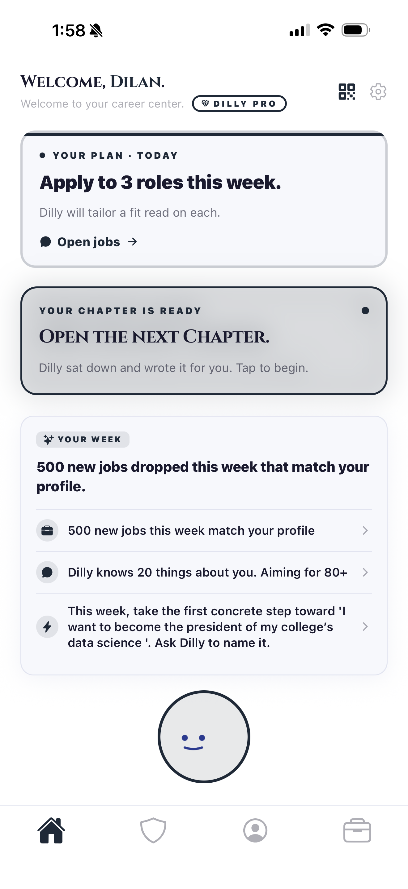

Mode 01
Student
Pre-first-job
Before the first full-time role. Internship hunt, ATS-tailored resumes, audits, tutorials. Built for .edu. Parent-invite and family plans sit here.
Dilly is the profile-first career OS for the age of AI. One app that grows with you from first internship to final promotion. Students find their first job. Seekers close the next one. Holders benchmark the career they already have.
Dilly is not a resume editor. It is a career platform built around a person, across every job they'll ever hold.
Dilly today is the consumer app. The roadmap is ten products by 2028, a B2B platform underneath, and a single profile that ties every surface together. See the Vision →
Build 301+ is on TestFlight today. Real profiles, real jobs, real fit narratives, real Stripe checkouts. Nothing here is a mockup.

Most career tools die the moment their user changes status. Dilly is engineered for the opposite. The product reshapes itself around where you are. The profile carries over.
Before the first full-time role. Internship hunt, ATS-tailored resumes, audits, tutorials. Built for .edu. Parent-invite and family plans sit here.
Between jobs. Any email accepted. Fit narratives on every listing, tailored resumes per role, a pipeline tracker, and recruiter-outreach that doesn't feel canned.
Already in the job. Comp benchmark, trajectory timeline, skills arsenal, raise brief, and a one-tap escape hatch back to Seeker. Career management for the 90% of time you aren't applying.
This isn't a pitch for a thing we hope to build. Dilly is on TestFlight, ingesting real jobs, scoring real resumes, processing real Stripe checkouts today.